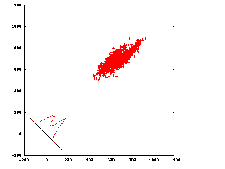

Supervised Classification
Getting started
- Download and unpackage the tarball from the archive.
The files will be extracted to the current directory.
(The alternative would be to create a new directory, but people may run classifications
more than once on the same data set, and I didn't want to risk overwriting files.)
- You will need the following inputs (change labels in procedure file if necessary)
- params -- parameter doc file, only needed if last ring for 'AP SH' is unspecified
- sel_group_cclim -- any document file whose length is the number of defocus groups
- sel_particles_*** -- selection file for each defocus group
- refangles
- Euler angles of the reference-projections
- should be the same for both references
- data***@
- unaligned particle stacks for each defocus group
- should be the same for both references
- align_01_*** -- alignment document files for each reference + defocus group
- prj_***@ -- projections for each reference + defocus group
Procedure files
- (Slow) Force alignment, when necessary, to same projection in both references
(in order to calculate deltaCC)
- PROCEDURE FILE: realign-orsh.spi or
realign-apsh.spi
- PARAMETERS: various alignment parameters
- INPUTS: align_01_*** (for both references), prj_***@ (for both references)
- OUTPUTS: align_01_***_realigned (for both references)
- OR SH
uses fewer resources than 'AP SH' when aligning only two images,
and in my preliminary tests, is about three times faster.
- The PubSub version under "Parallel usage" below appears to work,
so I'll probably stop updating these two procedure files.
There is a non-PubSub version, realign-inseries.spi, which should be equivalent.
- Calculate deltaCC
- PROCEDURE FILE: sc-compare.spi
- INPUTS: align_01_***_realigned (for both references)
- OUTPUTS: norm_delta_ccrot (combined and for each defocus group),
hist_delta_ccrot_norm, plothist.gnu (a Gnuplot script)
- NOTE: deltaCCROT = CC(ref2) - CC(ref1)
Normalized, the range for each defocus group will be 0 to 1.
For the time being, normalized and unnormalized versions are written out.
- Check deltaCC histogram using plothist.gnu

A delta CC histogram
(from Bill Baxter)
NOTE: In the current procedure files,
the plotted value is CC2-CC1
|

A plot of CC2 vs. CC1
(click to enlarge)
The histogram is a projection along the line y=x.
It's possible that the best projection is in some other direction,
which is equalivent to weighting n*CC2 - CC1.
This plot can be generated from doc_delta_ccrot_total.
(from Bill Baxter)
|
- Split histogram
- PROCEDURE FILE: split-by-df.spi
- PARAMETERS: Minimum, maximum deltaCC
- INPUTS: norm_delta_ccrot_*** (or doc_delta_ccrot_***)
- OUTPUTS: sel_particles_***
- These outputs are suitable for reconstruction procedure files, such as
deffsc.spi.
Remember to change the names of the now-split selection files in the procedure files accordingly.
More than two references
The above procedure files are helpful for discerning between two references,
but when there are more than two references,
it would be impractical to try all combinations of pairs of references
in order to calculate the deltaCC. Instead, I wrote the following PROCEDURE FILE:
- PROCEDURE FILE: compare3plus.spi
- PARAMETER: Number of references
- INPUTS: align_01_*** (for each reference + defocus group),
../Reconstruction/stack2particle*** (optional)
- OUTPUTS: align-compared3plus_01_*** (for each defocus group),
Reconstruction/df***/comparedparticles (for each reference + defocus group)
- This procedure file is a bit inelegant.
In order to be able to loop through directories,
I create symbolic links of the form Align***/.
These links are create immediately after the Inputs section of the procedure file header.
Someday I plan to add the use of FR N.
Change the directory names (and number of references, above) accordingly:
VM M
ln -sf ../Alignment [align_dir]001 ;
ln -sf ../30S/Alignment [align_dir]002 ;
ln -sf ../70S/Alignment [align_dir]003 ;
ln -sf ../50S/Alignment [align_dir]004 ;
ln -sf ../Dimer/Alignment [align_dir]005
The procedure file assumes that, for each referece,
there are Alignment/ and Reconstruction/ directories.
In other words, for the example above, I would have directories:
- Reconstruction/
- 30S/Reconstruction/
- 70S/Reconstruction/
- 50S/Reconstruction/
- Dimer/Reconstruction/
This procedure file does not calculate deltaCCs.
Rather, it simply picks the reference that gives the highest CC.
The optional input ../Reconstruction/stack2particle*** originates from my
classification-based particle-verification procedure files.
The format of the output selection file will depend on these files.
I think the maximum number of references is 9 (related to the limit for in-core
doc files).
Parallel usage
I have an experimental set of procedure files based on realign-orsh.spi that I recently started to use.
Specifically, it tries to prevent all nodes trying to read the image-stacks at the same time
by giving the previous defocus group a head-start.
By default, I have this parameter set to 600 seconds (10 minutes).
The flow is as follows:
- For parallel usage:
- realign-check.spi -- checks input files before publishing jobs to nodes.
It's a hassle to kill a job on the cluster once the toplevel job is submitted.
- realign-distribute.spi --
run by realign-pubsub.spi and runs realign-main.spi for each defocus group
and creates a dummy file when it finishes
- realign-main.spi -- does the actual realignment -- is based on realign-orsh.spi
- realign-wait.spi -- run by realign-main.spi
-- waits up to, by default, 10 minutes for the previous stack to finish being read
For serial usage:
- Serial usage is conceptually trivial,
but to run the same copy of realign-main.spi as above,
there is a wrapping procedure file called
realign-inseries.spi.
I'll probably stop updating the realign-**sh.spi procedure files above.
References
- Valle M, Sengupta J, Swami NK, Grassucci RA, Burkhardt N, Nierhaus KH, Agrawal RK, Frank J. (2002)
Cryo-EM reveals an active role for aminoacyl-tRNA in the accommodation process.
EMBO J. 21: 3557-67.
- Gao H, Valle M, Ehrenberg M, Frank J. (2004)
Dynamics of EF-G interaction with the ribosome explored by classification of a heterogeneous cryo-EM dataset.
J Struct Biol. 147: 283-90
- Shaikh TR, Gao H, Baxter WT, Asturias FJ, Boisset N, Leith A, Frank J. (2008)
SPIDER image processing for single-particle reconstruction of biological macromolecules from electron micrographs.
Nat Protoc. 3: 1941-74.
Recent modifications
- 2012-12-10 -- realign*spi -- reduced maximum outer radius for alignment
- 2011-01-05 -- sc-compare.spi -- incorporated Chuan-Chao Lu's CC normalization
- 2010-02-08 -- realign-orsh.spi -- overrides outer alignment radius if too big
- 2009-09-11 -- added compare3plus.spi for more than two references
- 2009-08-20 -- split-by-df.spi has option to remove lowest-CCC particles
- 2009-05-20 -- added PubSub version of realign-orsh.spi
- 2009-04-17 -- renamed sc-dfsel.spi to split-by-df.spi and sc-realign.spi to realign-**sh.spi
- 2009-04-17 -- realign-orsh.spi -- implemented alignment using
OR SH
instead of AP SH -- 2-3X faster in preliminary test
- 2009-04-17 -- sc-compare.spi -- added Gnuplot script as output
- 2009-01-16 -- renamed and reorganized procedure files
- 2009-01-15 -- no longer uses a global particle number
- 2007-12-03 -- split-by-df.spi now writes sel_particles*** in core, is much faster
- 2007-11-28 -- group-selection files now sel_particles_*** instead of df***/seltotal
- 2007-05-25 -- input unaligned images are now stacks
- 2007-03-20 -- started archive of tarballs
- 2007-03-20 -- renamed extension from .bat to .spi, other slight renaming
- 2006-08-29 -- realign-**sh.spi -- reference projections are stacks now
- 2005-05-05 -- sc-compare.spi -- particles not aligning to same projection saved
Source: techs/supclass/supclass.htm
Page updated: 2012/12/11
Tapu Shaikh
{kind=link}